Auras
Phoenix II —FAQ (IOS)

BOOKMARK
FAQ (IOS) by light_rock_zz
Version: 5.3 | Updated: 07/29/2025
FAQ of the Month Winner: January 2020 | Highest Rated Guide
Ships
Auras
| General Aura Strategies as upgrades progress | |||||||||||
|---|---|---|---|---|---|---|---|---|---|---|---|
This section discusses how each Aura evolves as their upgrades  go, how upgrading them would help you, as well as detailed strategies to use them to maximum effect.
go, how upgrading them would help you, as well as detailed strategies to use them to maximum effect.
When the stat says Max _, it means when the Aura is completely full. In other words, collecting any more particles will no longer increase the Aura size. This is only applicable for radius based Auras. A non-full Aura scales accordingly.
Particles
Collect energy from destroyed Invaders to charge your special ability.
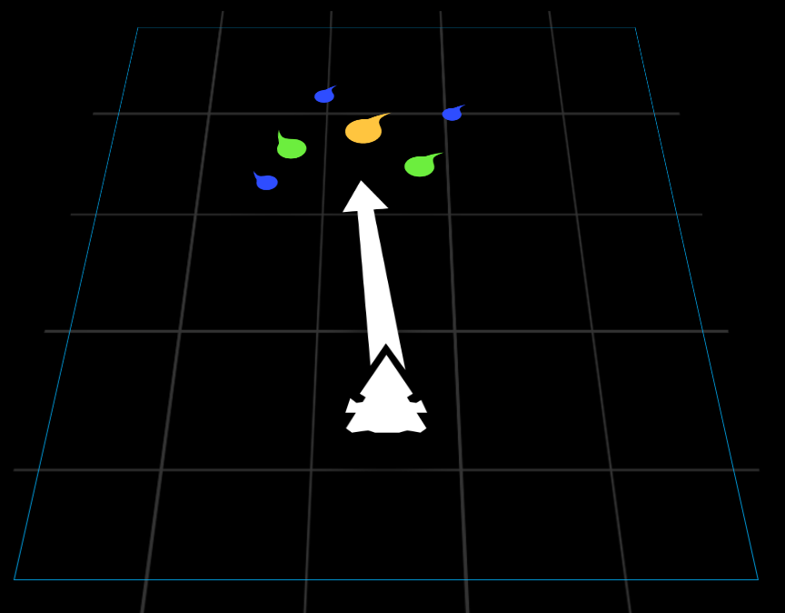
There are 4 sources of energy in this game:
- Energy particles dropped by destroyed Invaders
- Energy particles generated by Kappa Drive
 , which generates one particle ~0.367s at Ultimate level
, which generates one particle ~0.367s at Ultimate level - Grazing (either from a bullet or laser)
- Aura Auto Regeneration (not due to grazing)
Here's the table of how much energy is earned. Take these numbers as it is first, as we will discuss this in the context of Auras later.
| Source | Energy Gained | |
|---|---|---|
| Destroyed Invaders | Blue Particles | 1 |
| Green Particles | 2 | |
| Gold Particles | 3 | |
| Particles generated by Kappa Drive | 2 | |
| Grazing Bullets/Lasers | 2 (per bullet) | |
| Aura Auto Regeneration | ~3.33 per second | |
*Note that Shogun has a small boost when grazing compared to other ships.
- All Auras will also regenerate up to an energy count of 10, which is not due to grazing.
- You will only regenerate this small amount of Aura while touch is engaged.
- When charging a Zen
 or holding a Zen's charge complete status, this regeneration does not occur.
or holding a Zen's charge complete status, this regeneration does not occur.
- When charging a Zen
- The regeneration rate around ~3.33 energy per second.
- You can see what I mean by regeneration in the video below:
With regards to particles dropped by Invaders, here is the total energy dropped by different Invader-classes.
- Invader affinities do not affect the energy dropped.
- While the number of blue, green and gold particles will vary even for the same Invader-class, the total energy of all 3 types of particles combined for one Invader will add up to the energy as shown below.
| Invader | Total Energy |
|---|---|
| Sparrow | 5 |
| Raven | 20 |
| Heron 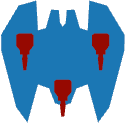 | 25 |
| Eagle | 30 |
| Vulture | 60 |
| Condor | 80 |
| Roc | 90 |
Finally, particles disappear from the field if they are not collected after 1 minute. This is very rare, and only occurs for gold particles from destroyed Invaders.
Trivia: Your ship actually drops some particles when it explodes. It's not clear how much is dropped but it appears to be unrelated to the amount of energy you currently have.
Aura Energy
With the numbers above for the energy by different means, here are the maximum energies that can be stored for each Aura.
- These figures do not change throughout level upgrades
 .
.
| Aura | Total Energy | Minimum Energy for activation |
|---|---|---|
| Bullet EMP | 100 | 10 |
| Stun EMP | ||
| Barrier | 30 | |
| Laser Storm | ||
| Missile Swarm | ||
| Point Defense | 10 | |
| Chrono Field | 15 | |
| Blade Storm | 30 | |
| Vorpal Lance | 60 per counter 240 in total (4 counters) | 60 |
| Goliath Missile | ||
| Phalanx | 60 per counter 360 in total (6 counters) | |
| Ion Cannon | 40 per counter 240 in total (6 counters) | 40 |
Bullet EMP
Clears all bullets in the Aura
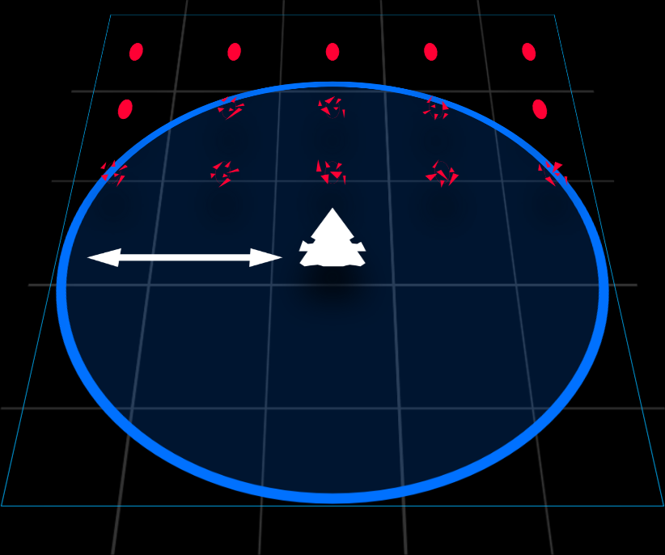
| Upgrade Lvl | Max Radius |
|---|---|
| 1 | 250 |
| 2 | 300 |
| 3 | 350 |
| 4 | 400 |
| 5 | 450 |
| Ultimate (6) |
| Ultimate | Description | Details |
|---|---|---|
| Max Stun Time = 0.6s | Interrupts enemy turrets with a short stun. | Stuns turrets in range for a maximum of 0.6s, scaled by radius , which is useful to reset spinners, MIRV Bloomers, and Doomsday Weapons. |
Useful Levels: All, Especially Ultimate
Brief Summary: The best beginner's tool of survival. Can be used offensively to some extent, but mostly defensive.
Upgrades
- Most useful Aura , even at Level 1.
- Upgrades in Bullet EMP only increases maximum radius .
- The smallest Bullet EMPs can save you from death.
- This is coupled with the fact that the automatic regeneration of Bullet EMP is enough for it to be used again.
- Since you would be usually cornered by bullets before your supposed death, the proximity with the bullets as you retreat is close enough for you to graze off them.
- This increases Bullet EMP radius a bit more, and being a bit more useful in clearing a small enough space to wiggle your way out of tight situations.
- Used in small amounts, Bullet EMP is almost able to infinitely save your life if you can dodge your way out of a bullet hell.
- Bullet EMP becomes more of a second chance, which you can almost infinitely abuse at times.
- Especially, in the absence of lasers .
- Upgrading Bullet EMP level by level does have a noticeable effect.
- The radius of Bullet EMP increases faster with the same amount of particles.
- At lower levels, Bullet EMP is purely a defensive tool.
- With higher levels however, Bullet EMP becomes more than that.
- It is also a re-positioning tool for offensive ships equipped with Bullet EMP.
- Indirectly, Bullet EMP helps out in damaging Invaders since you can then aim your weapon straight at the Invaders instead of potentially missing and wasting DPS.
Strategies
- Bullet EMP is a universal bullet clearing tool.
- Doesn't have any particular weakness to any type of bullets
- Against boomerangs
 , while Bullet EMP works well to clear them out, mis-firing Bullet EMP at the wrong time can miss a few incoming boomerangs.
, while Bullet EMP works well to clear them out, mis-firing Bullet EMP at the wrong time can miss a few incoming boomerangs. - Very effective against pellet and dart spinners since you could rapidly graze off them, resulting in Aura gains.
- You can then hop across lanes after a very short time to avoid other bullets coming in that lane you are in.
- One weakness of Bullet EMP is that it is a one-time usage, using it leaves you vulnerable in the next round of bullets.
- However, destroying Invaders fast enough gives you particles to refill Bullet EMP very quickly, thus being able to launch more decently sized Bullet EMPs.
- Remember, even the smallest Bullet EMPs help!
- Bullet EMP's Ultimate
 is a game changer.
is a game changer.- A 0.6s stun duration doesn't seem like much, but the duration is not what you are looking at.
- It is the very fact it stuns in the first place that works so well.
- Works very well to reset deadly spinners, MIRV Bloomers, lasers and Doomsday Weapons, and delay them from firing, leaving you more space to move around with less bullets being pumped onto the field, or lasers to cut you off into a corner.
- Buys you more time for you to destroy these dangerous turrets.
- The huge radius also allows you to go on the offense and line yourself up with these dangerous turrets to take them out quickly.
- The additional useful fact of Bullet EMP is that it slows down time briefly when the Aura is expanded (the bigger Aura, the more slowed time you have, obviously), allowing you to move yourself in place.
- The stun time can also be enough for you to charge up an offensive Zen .
- Bear in mind that it is mostly a one time reset, so you still need to act fast to take out these turrets, unless there are enough smaller Invaders around to feed your Aura . At best, you can reset twice.
- This turns Bullet EMP into a versatile offence and defence tool.
- Much better to use Bullet EMP pre-emptively, instead of doing the standard retreat until you are cornered strategy.
- This is because Bullet EMP is a 360° Aura , and using it further back wastes the 180° behind you, clearing less bullets than optimal.
- When you know that you are going to be cornered, use Bullet EMP immediately.
- When you have decided it is time to use Bullet EMP, try your best to make a sudden jerk forward as much as you can (be careful not to crash into bullets, do however much you are comfortable with) and then fire Bullet EMP.
- Using it as forward as you can also allows you retreat space afterwards, which is always useful.
- Cannot deal directly deal against lasers .
- For most cases, the reset only works one time since the second Bullet EMP would usually not be big enough to cover all lasers on field.
- This means a problem against fast tracking lasers , and there can be multiple of them scattered in different parts of the playing field.
- The reset also works to your disadvantage for certain turrets.
- For T1/T2 dart launchers, it can cause them to shoot randomly after they are being free of the stun, causing a mess of bullets on field.
- Couple that with T3/T4 dart spreads that also flood the field again quickly, it can sometimes be a problem.
- The same goes with pellet spreads, particularly when they are hit with your Bullet EMP during their cooldown period.
- The biggest issue comes with boomerang turrets, particularly high tier ones, since they will flood you with boomerangs immediately after being free of the stun, leaving you little time to react, especially with the combination of the other bullets previously mentioned.
- For most cases, the reset only works one time since the second Bullet EMP would usually not be big enough to cover all lasers on field.
- Struggles slightly against heavy waves.
- You will need to find ways to graze off other bullets, such as darts or even pellets.
- Against higher rank daily missions, Bullet EMP can be difficult to sustain due to how heavy and dense waves can get.
- As a pure defensive tool, you must quickly work to eliminate enough Invaders to create enough breathing space for yourself, before you get cornered with the tiniest Bullet EMPs which can be difficult to save you.
Stun EMP
Stuns enemy turrets in the Aura
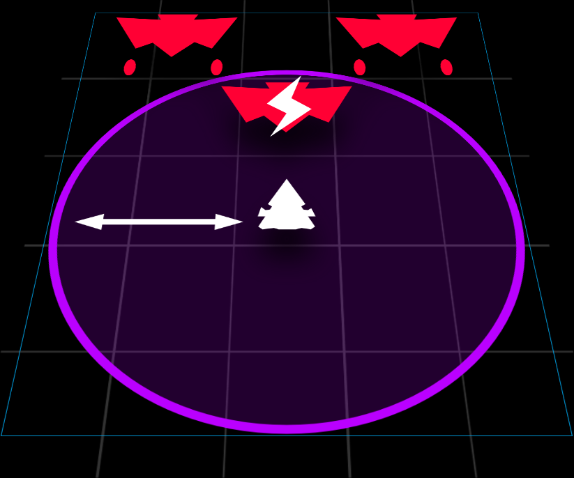
| Upgrade Lvl | Max Radius | Max Stun Time |
|---|---|---|
| 1 | 450 | 2.0s |
| 2 | 2.25s | |
| 3 | 2.5s | |
| 4 | 2.75s | |
| 5 | 3.0s | |
| Ultimate (6) |
| Ultimate | Description | Details |
|---|---|---|
| Max Damage | Deals damage to all enemies in the Aura. | Deals a maximum of 10 damage |
Useful Levels: 1, Ultimate
Brief Summary: High skill Aura, only recommended for more experienced players. Works best in dense waves.
Upgrades
- A Level 1 Stun EMP is generally not enough to do any useful stunning for its true intended purposes.
- However, a Level 1 Stun EMP works very well to reset spinners, MIRV Bloomers and lasers just like Bullet EMP.
- Used in small quantities, Stun EMP can make a big difference in your survivability at level 1.
- The fact that Stun EMP does not increase in radius means it is far reaching, which is very useful for resetting multiple turrets.
- It is thus used as precision turret stopping tool.
- If you predict a mess of bullets headed your way, stun a group of turrets to lighten the load of bullets.
- At level 1, Stun EMP is also a pseudo dodging tool, as the time slowdown from the smallest Stun EMP can make a difference in dodging between tight gaps of bullets.
- Once you reach higher levels, the true purpose of Stun EMP is realized.
- Stun EMP is now a pre-emptive usage, and you should almost always use it when the wave fully arrives, rather than waiting a while to stun spinners, MIRV Bloomers and lasers.
- Stun EMP now gives you near absolute freedom (with only the bullets from the previous wave being of hindrance, if any) in navigation.
- The time slowdown effect of Stun EMP is also significant and lasts quite some time.
- This allows you to carefully navigate out of the mess of bullets left behind in the previous wave and eliminate Invaders.
- During the stun time , eliminate smaller Invaders first to refill your Aura quickly.
- Eliminate from the smallest to the biggest Invaders, so Ravens
 , then Herons , then Eagles and so on.
, then Herons , then Eagles and so on. - Sparrows
 are of no issue as the Stun EMP blast would had killed them with the Ultimate upgrade.
are of no issue as the Stun EMP blast would had killed them with the Ultimate upgrade.- If you don't have the Ultimate however, eliminate Sparrows before Ravens .
- If you don't have the Ultimate
- With absolute freedom to move around, go behind larger Invaders to destroy smaller ones.
- When you eliminate enough smaller Invaders, you would gain back a full or near full Aura to fire yet another one.
- Keep using Stun EMP at full or almost full radius where possible.
- You can stop using Stun EMP once the radius of Stun EMPs is less than half.
- Eliminate from the smallest to the biggest Invaders, so Ravens
- Using Stun EMP is like a tactical strategic puzzle. Figure out the solution which is the sequence of killing Invaders to solve the wave
- Use the initial time slowdown to quickly figure out the solution while avoiding the bullets from the last wave.
Strategies
- Requires experience, especially knowing roughly the stun time with the corresponding radius of Stun EMP.
- Fire Stun EMP before the Invaders are free of the stun and start firing bullets again.
- However, do not waste the previous Stun EMP stun duration as they do not stack.
- Each Stun EMP blast has its own countdown timer. When only one timer has finished countdown, it does not matter.
- Invaders are only free of stun after all Stun EMP countdowns have reached zero.
- Allowing Invaders to be free of stun , even for just a millisecond, can spell disaster as bullets can go flying around in all directions, making navigation difficult.
- The fast refilling nature of Stun EMP means that killing rapidly is essential, which makes it very powerful against dense waves.
- Bear in mind that the relatively small AoE damage
 of Stun EMP means that there may not be enough time to keep heavy waves continuously stunned.
of Stun EMP means that there may not be enough time to keep heavy waves continuously stunned. - When you are about to anticipate a heavy wave, keep particles from the previous wave to have spare particles to keep Invaders of a heavy wave continually stunned .
- On the other hand, when faced with a wave that has only Eagles and/or higher, Stun EMP should only be used when dangerous turrets are about to fire.
- If there is no such turret, feel free to use it immediately and just proceed to pop off the most dangerous turrets on field first.
- If the wave is not dense enough to sustain the continuous usage of Stun EMP, you run into problems post stun where bullets start flying around in all directions.
- It becomes a tactical puzzle to quickly plan to eliminate what you can in that time period, and head back downfield to prevent bullets from flying around in all directions.
- This only applies when there are dart tracking turrets or boomerangs .
- Because of how the smallest Stun EMPs reset any turret, it is very useful against spinners and Doomsday weapons.
- You can completely prevent them from firing at all.
- Particularly, it should be used to render Doomsday Bombs
 useless. After stunning it, you have complete freedom to kill off Invaders and turrets anywhere without worry.
useless. After stunning it, you have complete freedom to kill off Invaders and turrets anywhere without worry.
- However, Stun EMP's biggest weakness is against Caged MIRVs .
- Their large radius destroys all, if not almost all Sparrows on screen, which leaves a big mess of pellets on screen.
- Clearing out the whole field of Sparrows with Caged MIRVs is still possible (since the number of Sparrows is still manageable), but judge your own comfort level.
- In early waves, using Stun EMP to wipe out all Sparrows will immediately call the next wave, which pumps in even more bullets and potentially more Sparrows with Caged MIRV .
- Judge for yourself if you are comfortable to keep on using Stun EMP to instantly clear all Sparrows with Caged MIRVs .
- Generally, you can only use Stun EMP every 2 waves due to the lack of particles.
- Particles from one wave generally don't generate enough Aura to have a powerful enough Stun EMP to eliminate all Sparrows , so no point to use Stun EMP in consecutive waves.
- If you want to use Stun EMP on waves with Caged MIRVs , trigger it just slightly before all Sparrows arrive so they get wiped out before they start moving around.
- This creates a predictable pattern of pellets that is much easier to dodge.
- However, there may be exceptions of certain formations where it might help to wait a split second when the Sparrows start moving to use Stun EMP as the pattern pellets released are impossible to dodge.
- Their large radius destroys all, if not almost all Sparrows
- You will no longer be using Stun EMP as a pseudo dodging tool.
- Or at least, it is extremely rare as Stun EMP is not designed as a last minute resort, but a pre-emptive use Aura .
- Stun EMP is also an effective AoE damage tool, with its extremely huge radius you can deal huge damage in dense waves.
- Its fast refilling nature also means continuous AoE damage in such dense waves, resulting in quicker eliminations to sustain the stun .
- Its fast refilling nature also means continuous AoE damage
Barrier

Barrier that stops bullets and lasers
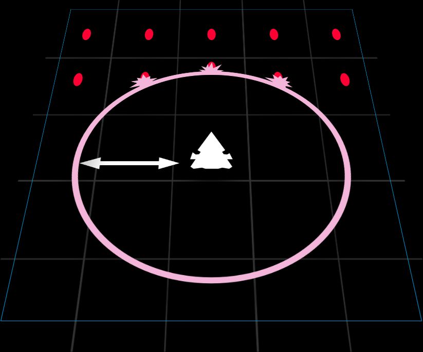
| Upgrade Lvl | Max Radius | Max Barrier Strength |
|---|---|---|
| 1 | 250 | 100% / 50 Bullets / 17 MIRVs / 4s per laser |
| 2 | 126% / 63 Bullets / 21 MIRVs / 5.04s per laser | |
| 3 | 150% / 75 Bullets / 25 MIRVs / 6s per laser | |
| 4 | 176% / 88 Bullets / 30 MIRVs / 7.04s per laser | |
| 5 | 200% / 100 Bullets / 34 MIRVs / 8s per laser | |
| Ultimate (6) |
| Ultimate | Description | Details |
|---|---|---|
| Inner Lining | Places an extra Barrier on the inside. | Adds an additional barrier inside the outer barrier that has a maximum strength of 100% (50 Bullets / 17 MIRVs / 4s per laser). The inner lining fades together with the outer barrier if the outer barrier starts fading first. The radius of the inner lining is always 90% of the outer barrier. |
Useful Levels: 1, (sometimes 5), Ultimate
Brief Summary: A pre-emptive usage Aura. Only recommended after a player has mastered the basics of understanding how bullets and lasers work. Surprisingly very effective if wielded very well.
Upgrades
- Utilized with extreme precision, Barrier sometimes even triumphs over Bullet EMP at level 1.
- The smallest barriers block off one full burst of lasers , and keeps bullets out for a reasonable period of time.
- This is very useful when cutting holes in bullet walls so that you can squeeze your way through the gap made by the barrier.
- It is not entirely reliable to cut bullet wall holes for sure, but it does help.
- Until you reach the Ultimate level, the usage of barrier remains the same. It is basically a tool to cut off bullets to squeeze your way through.
- However, you will have more leniency in last minute barrier deployments against lasers .
- Barriers are best deployed as small as possible and around yourself.
- You can deploy upfield if you find you are in an overflow of particles.
- Stacking multiple barriers (more than 4 is quite excessive already) is generally not useful.
- The unfortunate thing about barriers is their health decays over time, so a barrier not taking damage will still fade after a while.
- This is why it is useless to deploy so many barriers as old barriers deployed inside of newer barriers will fade without it having its usefulness.
- You can however, attempt to deploy each subsequent barrier a little backward than the previous one, such that the front barrier is an older one and can be useful against incoming bullets from tracking turrets.
Strategies
- When you reach the Ultimate level, gameplay changes radically.
- When you get a large amount of particles for a full radius / near full radius of barrier, deploy barriers upfield so it encapsulates Invaders.
- This allows you to take advantage of the inner lining of barriers.
- This is not true for all barrier ships as some ships are either too weak or have a main weapon
 that makes it difficult to deploy barriers upfield.
that makes it difficult to deploy barriers upfield.
- The one important thing about barriers is their Fade Out Time.
- No matter the size of the barrier, the Fade Out Time is mostly consistent.
- Thus, the smallest barriers are very useful.
- Deploying upfield to create practically a double barrier drastically improves survivability from the double Fade Out from both the inner lining and outer barrier.
- The Fade Out of barriers is unreliable in protecting you from lasers leaking through barrier, so be prepared to strafe or deploy a small barrier where you are when you see the barriers fading.
- Barriers' biggest weakness is against lasers since they do enormous damage to barriers.
- One full burst of about 10 lasers is enough to make a barrier start fading.
- However, they are incredibly effective against speed lasers which do very little damage to barriers.
- The gameplay of Barrier at Ultimate level is generally to deploy a barrier upfield when the following 2 conditions are satisfied.
- Firstly, it must be sufficiently safe enough to go upfield to do the deployment.
- Secondly, there must be either slightly less than enough to completely fill the Aura , or only slightly more than enough.
- If you see that there are too many particles, strategically grab some particles, and head back downfield to dump a small barrier at the bottom of the field.
- Try to make the outer edge of the smaller barrier not inside the bigger barrier upfield (if any).
- When opportunity allows, head back upfield to deploy the full barrier around Invaders.
- Take note that it can take a small fraction of time for you to actually pick up the particles when dashing upfield, so the barrier size may not always be of a size you wish.
- It is difficult to control this don't be too concerned over this, as a small upfield barrier can also make use of its inner lining.
- Always try to keep a small deployable barrier at hand where possible.
- The more important priority, however, is to make sure that you have at least one barrier deployed at the start of a wave, preferably upfield.
- If you can afford to spam more upfield barriers, do it, even if that leaves you with nearly no Aura remaining.
- When looking at survivability, it is usually possible to delay the next wave and place at least one upfield barrier.
- When speedrunning, find opportunities midwave to quickly head upfield to deploy a barrier.
- If you need to charge a Zen that takes a long time, then it might just be better to deploy a barrier around yourself to save time going upfield.
- It is ok to dump some barriers downfield to prevent overflow of particles.
- If you need to charge a Zen
- Generally, the maximum recommended number of big barriers upfield is 2, since there are 4 layers of barriers to plow through.
- 2 large barriers and 1 mini one upfield is also generally ok.
- The most important about barriers is barriers are not tools of defence to have leeway in doing whatever you want downfield and be safe from Invader fire.
- Depending on ship, you should deploy some offensive Zen while barrier is up, or use the chance to start popping off turrets or killing Invaders.
- Barriers are designed to be destroyed, so they are merely to buy time to destroy Invaders, and not stay safe forever.
- Do not be afraid to deploy barriers around yourself, and waste the inner lining .
- Small barriers around yourself can work better than big barriers upfield, even without the use of the inner lining .
- Small barriers can still effectively aid the setup of many offensive Zens .
- The smallest barriers can also be a slightly pre-emptive last defence against a wall of bullets approaching you.
- Emphasis on pre-emptiveness, as the most last minute barrier won't save you from bullets.
- For lasers , absolutely so.
- Small barriers can still effectively aid the setup of many offensive Zens
- Generally, when deploying an upfield barrier, you want to cover all Invaders so you can safely charge an offensive Zen or do turret popping.
- However, if there are very deadly turrets on a Vulture
 behind, especially MIRV Bloomers, spinners and high tier boomerang turrets, it may be beneficial to instead deploy the barrier such it only covers the dangerous turrets.
behind, especially MIRV Bloomers, spinners and high tier boomerang turrets, it may be beneficial to instead deploy the barrier such it only covers the dangerous turrets. - Leave yourself exposed to Invader fire below, such that the barrier(s) can block off only the more dangerous bullets and MIRVs coming from upfield.
- Barrier positioning does matter in such circumstances.
- However, if there are very deadly turrets on a Vulture
- Despite Doomsday Lasers
 and Doomsday Bombs completely obliterating Barriers, due to the long duration these weapons take to fire, you can continue to place barriers even in the presence of Doomsday weapons.
and Doomsday Bombs completely obliterating Barriers, due to the long duration these weapons take to fire, you can continue to place barriers even in the presence of Doomsday weapons.- However, be sure to keep a deployable barrier when you see these Doomsday weapons.
- After the Doomsday weapon has fired, barriers can be deployed again since barriers don't last long anyway.
- An interesting to note is that, an absurd amount of barriers can actually stop a Doomsday Laser , although the amount is usually impractical.
- This goes to prove that the Fade Out of barriers have a large but finite amount of health, which likely decays quickly over time.
- However, no matter the amount of barriers placed, all barriers are obliterated immediately after a Doomsday Bomb goes off.
- An interesting to note is that, an absurd amount of barriers can actually stop a Doomsday Laser
- Keep in mind that quite a number of barrier ships cannot to fully utilize the inner lining .
- Take a closer look at each barrier ship before coming to a conclusion whether the ship is good or not.
- Generally, ships that can often utilize the inner lining have better survivability.
- Barrier looks like a very straightforward Aura to use (it sounds like just always deploy barriers upfield), but there are many complexities to it where if well optimized, can make Barrier users very powerful in survival.
- It is hard to advise on any hard and fast rule on how to use Barrier as a lot of it is based on feel and experience.
- For an average user however, it is usually slightly underpowered, especially in higher ranks where the bullet density is very high.
- Barrier is also effective against all kinds of bullets, particularly fast moving ones.
Laser Storm

Laser Moons strike at targets in range
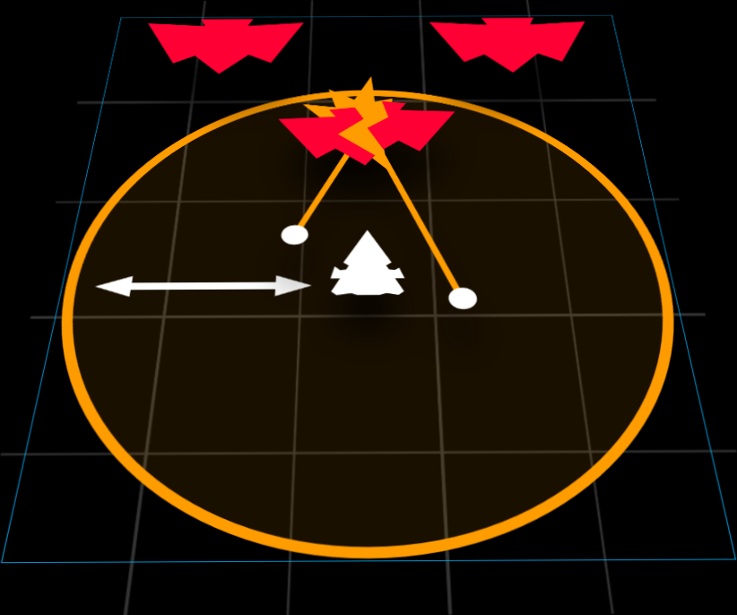
| Upgrade Lvl | No of Laser Moons | Max Duration | Max Damage | DPS of Each Laser Moon | Max Radius |
|---|---|---|---|---|---|
| 1 | 3 | 4.5s | 89.27 | 6.613 | 350 |
| 2 | 93.74 | 6.943 | 375 | ||
| 3 | 4 | 98.2 | 5.455 | 400 | |
| 4 | 102.67 | 5.703 | 425 | ||
| 5 | 5 | 107.13 | 4.761 | 450 | |
| Ultimate (6) | 111.59 | 4.959 | 500 |
| Ultimate | Description | Details |
|---|---|---|
| Laser Moon Mk2 | Increases damage output and improves targeting. | Makes Laser Moons |
Useful Levels: Ultimate
Brief Summary: Very underpowered Aura. Main purpose is to pop turrets off. Not really recommended for anyone, even pros or beginners alike.
Upgrades
- Useless at level 1, as Laser Storm does puny DPS over a long duration of 4.5s, and targets anything it so likes, which is seldom what is desired.
- The worst thing about level 1 Laser Storm is its tiny radius , so you must keep in range of some Invader in order to deal any damage at all.
- To keep up close to the Invaders with such a tiny radius is simply ridiculous.
Strategies
- No changes to how you would use Laser Storm at all levels, including Ultimate .
- The Ultimate basically is the one that is the main function of Laser Storm, to pop turrets off.
- Just spam Laser Storm unless it is too small
- If it can cover some upfield Invader turrets, just use it.
- The very big problem about Laser Storm is, it lasts so long, which almost always mean particles wastage since the next Laser Storm after the current one fades would very likely to be full Aura radius .
- No way to tell how much particles to collect because you can't see the Aura radius growing in size while the current Laser Storm is in use.
- So treat Laser Storm as nothing more than a supplementary damage .
- Manual Aura management is too difficult without any form of visual indicator.
- Laser Storm deals damage slowly. Thus, as an offensive Aura , it fails at its job to eliminate targets fast.
- Laser Storm also switches targets after firing at one for some time, which means turrets sometimes don't get popped off quickly enough unless you use your main weapon to explicitly finish off the job.
- The need to usually stay sufficiently close to Invaders, especially on waves where you are short of particles, is another big problem.
- Especially so in heavy waves as they will more likely feature deadly turrets.
- The absence of the need to lock on any targets means it is also possible to accidentally fire Laser Storm without Invaders being around.
- Thus, never activate Laser Storm pre-emptively, but only when Invaders have fully arrived.
Trivia: In a screenshot of Phoenix 2, that was on one of the dev's Twitter / X before the game was officially released which you can see here, it was apparent that Laser Storm was called Laser Satellites. However, the devs have clarified that these names that you see in the placeholder image were never used in development, so the image was just a placeholder with placeholder names.
Missile Swarm

Missiles strike on all targets in range
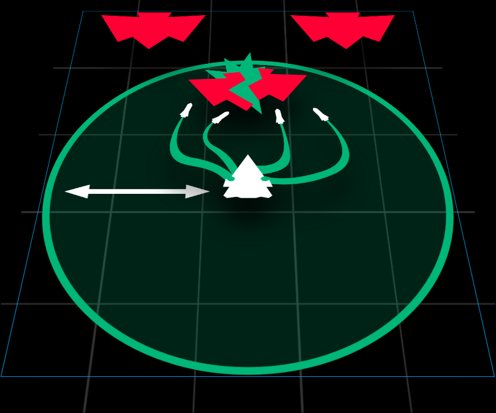
| Upgrade Lvl | Max No of Missiles | Max Damage | Max Radius | Target Tracking |
|---|---|---|---|---|
| 1 | 38 | 114 | 300 | Very Good |
| 2 | 40 | 120 | 337 | |
| 3 | 42 | 126 | 375 | |
| 4 | 44 | 132 | 412 | |
| 5 | 46 | 138 | 450 | |
| Ultimate (6) | Perfect |
| Ultimate | Description | Details |
|---|---|---|
| Advanced Targeting | Enables Missiles to switch to other locked targets. | Allows missiles to re-target if the originally targeted Invader (decided individually at the point of time Missile Swarm was fired) is destroyed. Bear in mind it will not re-target to a target Missile Swarm did not lock onto at the time Missile Swarm was fired. |
Useful Levels: 1-5, Ultimate not very important
Brief Summary: Consistent burst damage Aura. Easy to pick up, hard to master. Generally reliable. Useful even for intermediate players who have moved on from a defensive playstyle. High level optimization is possible.
Strategies
- The missiles of Missile Swarm have the following stats:
- Initial Speed = 400
- Initial Acceleration = −1200
- Minimum Speed = 10
- Acceleration after 0.25s = 400
- Maximum Turning Rate = 650
- Maximum lifespan of 3s before they disappear, which can happen due to missiles circling around Invaders
- One of the most straightforward offensive Auras to use in the game.
- Fire and Forget principle. After you launching Missile Swarm, let it do its job and you continue doing whatever you need to.
- No point to care about what Missile Swarm does after you fire it.
- The onus is on you to make sure Missile Swarm targets whatever you need to target before you actually fire it.
- This means that it is important that you try to as upfield as possible so that you cover as many targets as possible.
- After a while, with experience from using Missile Swarm, you'll roughly know how many targets are sufficient for different radii of Missile Swarm Aura so that you don't waste missiles.
- This is the part that is hard to master, and can make all the difference in speedrunning.
- The Ultimate isn't terribly important for Missile Swarm, as misguided missiles that attempt to hit a target that has already been destroyed actually have a chance of simply trailing off to hit another Invader, especially larger Invaders.
- The Ultimate primarily helps Missile Swarm in dense waves.
- When there are larger Invaders in front, the Ultimate is less useful.
- The Ultimate
- It's a good idea to be on one side of the field when you fire it.
- After firing it, quickly strafe to the other side.
- Doing this allows you to dodge the initial oncoming fire since tracking turrets will all fire to that side.
- Missile Swarm also tends to be like an epidemic; it's damage tends to spread out from the epicenter, and slowly gets weaker as the radius spreads.
- This means that staying on that side means your main weapon might compete for damage with Missile Swarm.
- With Ultimate , this is less significant as the missiles can redirect themselves
- Due to the high burst damage of Missile Swarm, this can mean forward firing main weapons can have nothing left to hit since Missile Swarm is a burst damage which kills whatever is on the side you fire Missile Swarm on extremely fast.
- This means that staying on that side means your main weapon
- This is the Divide and Conquer technique, where Missile Swarm takes care of one side of Invaders while your main weapon takes care of the other side.
- Effective against frontline dense waves.
- However, since Missile Swarm spreads from its source of release, this means more often than not, it is difficult to reach dense Invader crowds upfield.
- This can be overcome by some Missile Swarm ships that can reach upfield safely, especially with Teleport
 .
. - Even with large Invaders in front, the heavy damage caused by Missile Swarm can eliminate these large Invaders quickly enough to destroy Invaders behind as well.
- The slight RNG factor of Missile Swarm can be annoying.
- Despite being bursty, it can sometimes be difficult to launch consecutive Missile Swarm strikes, especially when the dense waves in front die out very fast, which necessitates quickly getting rid of the particles collected.
- You can only fire the next Missile Swarm after the last missile has hit its intended target, accounting for re-targeting .
- Missiles that are lost due to all targets locked on at fire time already destroyed do not count.
- This means that you are at the mercy of Invader RNG movements, which can be annoying especially due to the curvy paths of Missile Swarm
- This makes some missiles circle endlessly before just disappearing and wasting damage and time.
- This makes some missiles circle endlessly before just disappearing and wasting damage
- Can struggle against dense waves.
- Missile Swarm deals single target damage instead of AoE damage
- Taking into account the travel time of all the missiles, Missile Swarm can be slow in clearing out dense waves.
- This means a real risk of particle overflow in such dense waves.
- Missile Swarm deals single target damage
- Obviously, conversely, excellent against heavy waves, which are usually problematic.
- A full Missile Swarm burst is usually enough to full or almost fully wipe 2 Eagles , which are significant problems due to their high health and possibly dangerous middle turrets.
- Unreliable in turret popping due to the curvy paths of missiles from Missile Swarm.
- They often hit the hull of Invaders instead of turrets.
- The principle is to kill entire Invader(s) before they have the chance to flood the field with bullets and lasers .
- This becomes an issue with Condors
 and Rocs
and Rocs  , especially when Missile Swarm is a one time use (or at most 3 times with 2.5 full sizes of Missile Swarm).
, especially when Missile Swarm is a one time use (or at most 3 times with 2.5 full sizes of Missile Swarm). - Being unable to pop turrets means Missile Swarm is nothing more than damage which only makes the fight slightly faster.
- Missile Swarm is not able to aid you in the rest of the fight with so many turrets still up and firing.
- That being said, shortening the fight with Condors and Rocs is a great help.
- When using Missile Swarm against Armored Invaders, unless you have the Armor Piercing
 apex, against Vultures and above, try to fire Missile Swarm to target only the cockpit and as few target points when speedrunning.
apex, against Vultures and above, try to fire Missile Swarm to target only the cockpit and as few target points when speedrunning.- The most ideal case is only targeting the cockpit and the 2 turrets nearest to the cockpit.
- Doing so will try to focus as many missiles onto the cockpit as possible, allowing more missiles to bypass armor damage reduction..
- Experienced players can try Missile Barreling.
- Frequently used on Eagles and Herons , go right up to the middle of the Invader, slightly offset below, and launch Missile Swarm.
- When executed perfectly, all missiles are immediately absorbed by the Invader
- This allows the next round of Missile Swarm to be used immediately.
- This technique has many benefits.
- In a survival context, Missile Barreling allows you to be able to exterminate a threatening Heron or Eagle instantly.
- It also allows you to get rid of difficult-to-reach turrets on a Condor or Roc instantly (if not Shielded
 ).
). - In speedrunning, being able to launch the second Missile Swarm immediately saves a lot of time.
- An imperfect Missile Barreling will result in a small amount of missiles still swerving around, which wastes time.
- To execute Missile Barreling on an Eagle , position yourself at the correct spot before the wave arrives.
- However, positioning yourself too upfield may cause you to overflow on particles.
- In these scenarios, you have to be very precise in going from downfield to the correct spot on the Eagle to do perfect Missile Barreling.
- This takes a LOT of practice.
- You would usually not require a perfect Missile Barreling for Herons , as Missile Barreling on Herons are usually only for lower Acts such as Acts 1 - 2
- Anything higher, it is better to not waste Missile Swarm by doing Missile Barreling.
- For Vultures , Missile Barreling is a lot more straightforward as you can go into the cockpit and release Missile Swarm.
- While possible to use on Condors and Rocs , the use case is non-existent since they have a lot more health.
- A full Missile Swarm would not kill them, so there is no point to quickly unload a full burst of Missile Swarm and potentially waste particles.
Trivia: Here were some early prototypes of Missile Swarm. Or maybe, you could say Missile Strike instead as the missiles were a lot more directed. The old Missile Swarm also required you to hold on to the double tap just like present day Point Defence to fire off an increasing amount of missiles.
Point Defence
Defensive lasers that destroy bullets
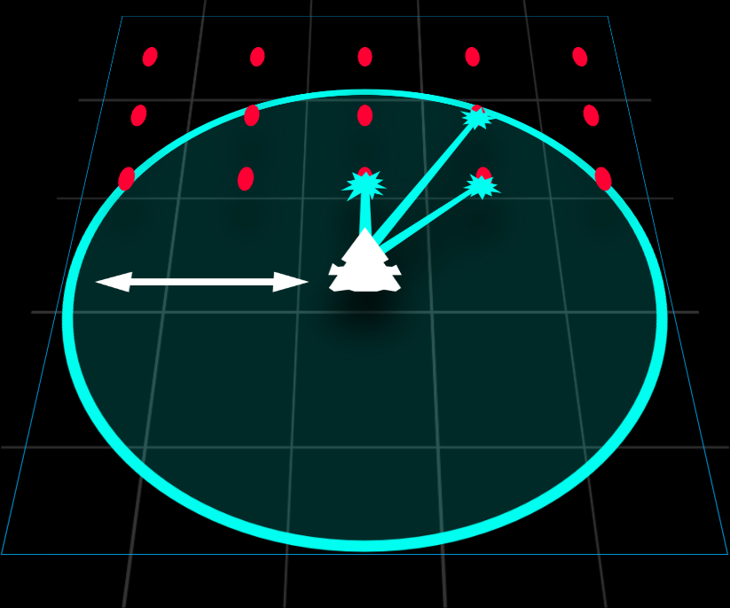
| Upgrade Lvl | Max Radius | No of Laser Beams | Efficiency (Aura Energy consumed per laser beam fired) |
|---|---|---|---|
| 1 | 250 | 2 | 1.5 |
| 2 | 290 | 4 | 1.25 |
| 3 | 330 | 6 | 1.0 |
| 4 | 370 | 8 | 0.75 |
| 5 | 410 | 10 | 0.5 |
| Ultimate (6) |
| Ultimate | Description | Details |
|---|---|---|
| MIRV Defence | Destroys MIRV projectiles more easily. | Eliminates one pellet MIRV or laser MIRV |
Useful Levels: Approximately 4-Ultimate
Brief Summary: A scalpel/precision strike Bullet EMP. Recommended for intermediate level players who can dodge reasonably well.
Upgrades
- Level 1 Point Defence is one of the worst defensive Auras in the game as it does nearly nothing.
- It is, however, useful in breaking holes in pellet walls in order to escape pellet lanes and make last minute defensive measures to avoid being trapped.
- However, this has to be done pre-emptively before faster bullets such as darts and boomerangs hit you.
- It is however, useless against darts and boomerangs .
- The inefficiency of Point Defence with only 2 laser beams means it is ineffective against shurikens which come in great quantities.
- To deal with shurikens, you just have to spam tap and graze to slowly cut through the shuriken clouds.
- However, this has to be done pre-emptively before faster bullets such as darts and boomerangs
- As you upgrade Point Defence, it becomes a lot more responsive and a lot more effective, being better able to deal with more and more types of bullets.
- The Efficiency stat measures the amount of Aura energy consumed for each bullet eliminated by Point Defence.
Strategies
- Eventually, it becomes a semi effective tool against MIRVs when it reaches the Ultimate level.
- However, it is no means that most effective against MIRVs due to them being the slowest bullets in the game.
- This means it is very difficult to get Point Defence to target them.
- It is usually more efficient to simply explode the MIRVs and use Point Defence to eliminate some of their released pellets rather than using Point Defence to plow through other bullets around it.
- This should be done when faced with a wall of shurikens around it.
- Or if there are too many pellet lanes around it.
- It is more efficient to explode a Super MIRV rather than trying to eliminate it using Point Defence.
- It takes 5 / 10 Point Defence laser beams targeting a single Super MIRV to eliminate it, which takes up too much time.
- This is very inefficient as they may be other bullets around. You will need to keep retreating slowly to stay in range of the Super MIRV but not too close to trigger it.
- In the presence of many Doomsday Super MIRVs
 firing multiple Super MIRVs, it takes too long to plow through all of the Super MIRVs, especially when there are 2 or of them firing.
firing multiple Super MIRVs, it takes too long to plow through all of the Super MIRVs, especially when there are 2 or of them firing.
- However, it is no means that most effective against MIRVs due to them being the slowest bullets in the game.
- It's usually more efficient to trigger laser MIRVs
 rather than eliminate it, since they aren't too dangerous. (It is not too difficult to find pockets of safe spaces around laser lanes.)
rather than eliminate it, since they aren't too dangerous. (It is not too difficult to find pockets of safe spaces around laser lanes.)- However, it can be useful to eliminate laser MIRVs that could not be triggered in the mass activation of laser MIRVs.
- However, it can be useful to eliminate laser MIRVs
- Think of Point Defence more like a last minute Bullet EMP .
- It can save you from certain death, but is only useful when used in small amounts.
- Holding on to Point Defence and therefore using it in large amounts drains Aura very fast, which is not effective.
- Point Defence should only be used in the most dire situations.
- It is also used to reposition yourself and jump across lanes of pellets or darts, especially when speedrunning.
- Never hold on to Point Defence when faced with a crowd of bullets as that will backfire later.
- Do brief taps in very desperate situations. Or if you need to reposition yourself at the other side of the field, use in very short holds.
- This is because Point Defence should only be used to eliminate the most dangerous bullets closest to you.
- When making the jump to reposition, holding it down means eliminating unnecessary bullets further away, which is not as useful.
- Instead, using it in bursts allows Point Defence to constantly re-evaluate the most dangerous bullets nearest to you effectively, reducing wastage.
- When faced with boomerangs however, start using Point Defence a little earlier (approximately 0.5s earlier) to clear off some bullets first.
- Even though a max level Point Defence is efficient, it is difficult for Point Defence to target boomerangs when it enters the radius of Point Defence Aura , leaving insufficient time for Point Defence to target the boomerangs.
- Even though a max level Point Defence is efficient, it is difficult for Point Defence to target boomerangs
- Point Defence should be used to move in the appropriate direction according to the wave formation.
- For dense waves with small Invaders in front, push yourself forward slowly while moving sideways very slightly to avoid head-on bullets.
- This allows you to collect particles from these Invaders to sustain Point Defence.
- For heavy waves, Point Defence should generally be used to move sideways, instead of against the direction bullets are coming from.
- This is because going head-on faces more resistance, draining Point Defence faster.
- For some ships, Point Defence is used as an aggressive positioning tool to get up close to Invaders.
- In such cases, Point Defence should be spam tapped, and still not held on to.
- Bear in mind that when the field becomes slightly more dense in bullets, it is no longer possible to use Point Defence for such aggressive close encounters with Invaders and Point Defence reverts back to normal usage.
- This is especially so for speedrunning with such ships, where you must be very careful of your Point Defence usage.
- You can fully drain Point Defence and graze to gain the minimum radius of Point Defence Aura to eliminate just enough to stay in close range, especially in bullet lanes or dart spreads.
- The good thing about Point Defence is it refills fast.
- The smallest Point Defence from Aura regeneration can still fire off one burst of Point Defence, which eliminates as many bullets as it can lock to.
- Usually up to about a maximum of 6 bullets when you desperately tapping it.
- This means with a bit of grazing, you can gain enough Aura to eliminate the most immediate threatening bullets around you and continue staying alive.
- This however, still require you to dodge anything faster than a pellet as grazing and regeneration are not fast enough to deal against darts.
- Last minute desperate Point Defence works like level 1 Point Defence or a very tiny Bullet EMP .
- This allows you to survive infinitely so long you are careful to always move just enough to avoid darts.
- This won't usually work against boomerangs since boomerangs have a larger hit circle which requires more movement.
- The smallest Point Defence from Aura regeneration can still fire off one burst of Point Defence, which eliminates as many bullets as it can lock to.
Chrono Field

Neutralize bullets in the Aura
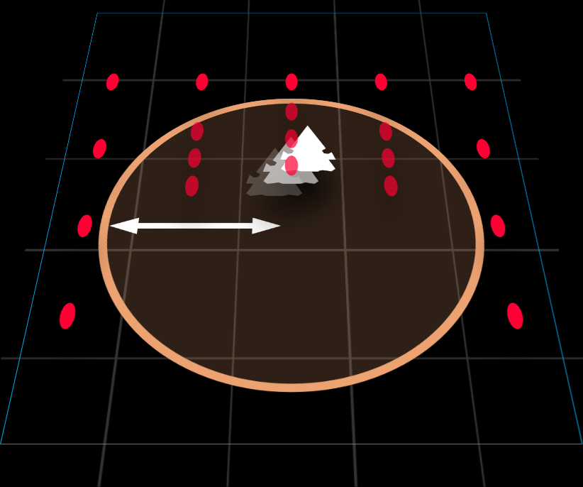
| Upgrade Lvl | Max Duration | Max Radius |
|---|---|---|
| 1 | 3.0s | 170 |
| 2 | 3.5s | |
| 3 | 4.0s | |
| 4 | 4.5s | |
| 5 | 5.0s | |
| Ultimate (6) |
| Ultimate | Description | Details |
|---|---|---|
| Phase Out | Briefly extends invulnerability when exiting the Chrono Field. | Allows you to continue to be invincible for 0.5s outside a Chrono Field after exiting it or after it starts to fade. The timer resets if you go back inside a Chrono Field. |
Useful Levels: 1, Ultimate
Brief Summary: Relatively high skill Aura. Recommended for players transiting beyond Colonel rank. Abused, it is the ultimate survival tool that will get you through any mission.
Upgrades
- When not at Ultimate Level, Chrono Field is simply nothing more than a positioning tool where you can safely position yourself underneath high priority Invaders or dangerous turrets to eliminate them quickly.
- In fact, it is more of a pseudo level 1 Point Defence where you can cross over lanes of bullets to safely inch your way around the field.
- Simply not very useful at lower levels.
- Being the smallest radius that never increases in upgrades make it very difficult to use at lower levels.
- Spamming small Chrono Fields at lower levels are thus really nothing more than a level 1 Point Defence .
- At higher levels, it is better as a positional tool as mentioned above since there is more time for you to kill Invaders or pop off turrets.
- Another slightly useful function of Chrono Field is that it slows bullets in the deployed Chrono Field.
- This allows you to cross these bullets safely when Chrono Field is active.
- Also allows you to safely plan for your Chrono Field exit.
- However, it is difficult to tell when Chrono Field will expire.
- Thus, pre-emptive planning is required and you need to estimate and move to your new location after Chrono Field expires earlier than when it actually expires.
- However, if the inside of the Chrono Field is completely full of bullets, this becomes a huge problem as there is no safe exit.
- Thus recommended you stay at one side of the Chrono Field and leave the other side only when Chrono Field is about to expire.
Strategies
- Everything changes when you unlock the Ultimate .
- Bullets slow down to ×0.3 of their original speed while in Chrono Field.
- The 0.5s of Phase Out
 means that you have 0.5s of invincibility ANYWHERE on field after Chrono Field expires.
means that you have 0.5s of invincibility ANYWHERE on field after Chrono Field expires. - 0.5s doesn't sound like much but it is enough to do nearly anything you would require.
- The most important implication of the 0.5s is it acts as a pseudo-Teleport, allowing to move to anywhere you want on the field after it expires.
- Chrono Field now becomes a high skill Teleport as well, meaning you need precise swiping skills to "teleport" wherever you want.
- You need to be very quick and precise.
- Make sure you land correctly and quickly.
- This comes with practice, but is a life saver when executed correctly.
- Another important implication of Phase Out is that the pointers under Upgrade is irrelevant now.
- You don't have to really care about where you are in the Chrono Field
- You can be anywhere you want in the Chrono Field and still reposition yourself ANYWHERE.
- This enhances the function of Chrono Field even further, allowing to fully concentrate on positioning to kill Invaders and pop turrets off.
- With sufficient Chrono Field experience, you don't need to plan where you want to be before Chrono Field expires as 0.5s is enough instinct time to go where you want.
- This eliminates the nervousness many initial Chrono Field users have from not knowing when Chrono Field will expire.
- The most important implication is how ANY radius of Chrono Field gives you this 0.5s of Phase Out time.
- This means you can continuously "teleport" wherever you want even with the smallest deployable Chrono Field.
- Bear in mind the minimum radius for Chrono Field does require quite a bit of particles,
- Sometimes you can just spin Russian Roulette (figuratively, of course) and pray that you can graze enough or get enough particles when utilizing the previous Chrono Field's Phase Out to cross massive clusters of bullets.
- Thankfully, by killing Invaders sufficiently fast enough, you can get the minimum Chrono Field radius easily which allows you to continuously abuse Phase Out .
- Sometimes you can just spin Russian Roulette (figuratively, of course) and pray that you can graze enough or get enough particles when utilizing the previous Chrono Field's Phase Out
- Unless speedrunning or having an extreme excess of particles, never deploy more than one Chrono Field at any point in time as you cannot take advantage of 2 Chrono Fields at the same time.
- Might be useful to deploy a new Chrono Field on top of an old one if you have a long charging Zen which is either Mega Laser
 or Mega Bomb , in order to abuse them safely.
or Mega Bomb , in order to abuse them safely.
- Might be useful to deploy a new Chrono Field on top of an old one if you have a long charging Zen
- Chrono Field is very powerful against all types of bullets since it simply negates their effects
- Generally a bit less powerful against slower moving bullets.
- MIRVs are a slight problem since their explosion is usually delayed significantly which sometimes hinders appropriate planning.
- Because of the invincibility Chrono Field provides, it is also effective against lasers .
- Remember that 0.5s of Phase Out time allows you to jump from one side of the field to another, dealing well against any tracking laser .
- May have a slight problem against cone lasers since landing safely between laser lanes can be a little difficult, especially with other bullets around.
- Remember that 0.5s of Phase Out
- Chrono Field needs to be slightly pre-empted, as deploying a Chrono Field at the absolute last minute will not save you.
- It takes probably 0.1s after the Chrono Field is deployed for its invincibility to take effect.
- It is possible to die even if you can clearly hear Chrono Field being placed.
Trivia: As written by the devs, Chrono Field used to work like Point Defence. as quoted in full, this is the history of Chrono Field in the past as according to the dev's Reddit post:
It was introduced alongside Vorpal Lance in update 2.0, December 2016. The first version of Chrono Field worked more like Point Defense, it was an Aura that was attached to the ship and you had to hold the ability to activate it. While it was active, enemy projectiles that entered the Aura would be slowed down. While the player moved around with the Aura attached, enemy projectiles would bunch up all over the battlefield. Like with Point Defense, the range would decrease while you were using it. So with low energy it would only slow down projectiles very close to the player ship. This version of the ability wasn’t very good and since you had to keep it activated it was impossible to combine it with any Zen ability, really.
It was updated about 2 months later (February 2017) to change so that the Chrono Field was deployed to stay in place, exactly like it does now. However, it only slowed down enemy projectiles, there was no invulnerability. It wasn’t until June 2017 that the invulnerability aspect was added.
Vorpal Lance

Fires a piercing Vorpal Lance
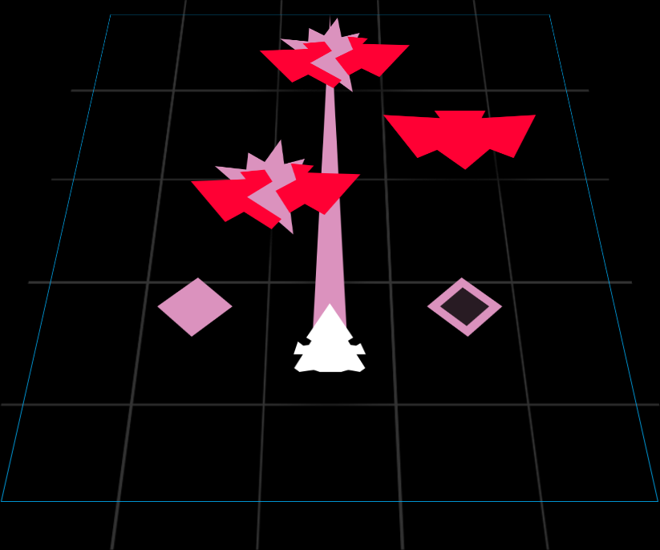
| Upgrade Lvl | Damage | Counters |
|---|---|---|
| 1 | 33 | 2 |
| 2 | 34.65 | 3 |
| 3 | 36.3 | |
| 4 | 37.95 | 4 |
| 5 | 39.6 | |
| Ultimate (6) | 39.6 |
| Ultimate | Description | Details |
|---|---|---|
| Vorpal Wake | Destroys enemy bullets hit by Vorpal Lance. | Allows Vorpal Lances to clear bullets. |
Useful Levels: 2, 5, (sometimes Ultimate)
Brief Summary: Easy and straightforward to use offensive Aura. Easily recommendable for all players. Potential to deal devastating damage when utilized to maximum effect. Slightly annoying at times due to RNG at play, plays quite a big factor when speedrunning. Very meta in daily missions.
Strategies
- Vorpal Lance has the following stats:
- Initial Speed = 1000
- Acceleration = 1000
- Maximum Speed = 2000
- Hit Circle Radius = 15
- Spawns exactly from ship core
- Generally straightforward in usage.
- See a column of several Invaders? Yeah, just throw in a Vorpal Lance. Basically, use it opportunistically.
- However, do not hesitate to use it.
- You do not need to wait for a perfect line-up to use Vorpal Lance.
- So long there are more than 3 Invaders in that line (if Ravens are present), you can throw a Vorpal Lance.
- Do not wait for Sparrows to line up as there is no point since they can easily escape Vorpal Lance due to their rapid movement and small size.
- In fact, don't use Vorpal Lance to solely kill Sparrows .
- You do not need to wait for larger upfield Invaders to arrive before throwing Vorpal Lances at Ravens and Sparrows in front.
- In speedrunning however, always wait for all Invaders to fully arrive before using Vorpal Lance.
- Other than a Roc of course, which takes way too long.
- Generally, do not use Vorpal Lances on larger Invaders like Herons unless there are several other Invaders behind it, or there are no other smaller Invaders in the wave.
- As a general guide, using 2 Vorpal Lances in Act 4 and above per wave is fine.
- As an offensive Aura , it is your job to keep the field clean before Invaders can overwhelm you.
- If there are too many Ravens on field at once (at least 3 columns of them) and you have 3 or more Vorpal Lances, perform a lance sweep
- Simply throw out Vorpal Lances equally spaced horizontally to eliminate as much as you can.
- It is usually not sensible to throw away 4 Vorpal Lances in a single wave, unless all the Ravens are hiding behind a Vulture (or 2 Eagles ).
- 3 Vorpal Lances are usually enough to eliminate most of the threat.
- In speedrunning, throwing 4 Vorpal Lances is justifiable if the wave is very dense.
- Even for dense and heavy waves, the size of larger Invaders make them very vulnerable to multiple Vorpal Lances, making them very weak or completely obliterating them.
- Eagles will eat at least 2 Vorpal Lances with major damage , while 3 Vorpal Lances take them out entirely.
- It is recommended to destroy 2 Eagles immediately with 3 Vorpal Lances in speedrunning.
- In survival, you can also destroy 2 Eagles with 2 or 3 Vorpal Lances if they have dangerous turrets.
- Vorpal Lances should not be stockpiled during dense or heavy waves, but exhausted to the point where at least one side of the field is almost clear of all Invaders (leaving either only 1 Raven or some Sparrows ).
- For light waves, only use one Vorpal Lance.
- This gets rid of one side of the light wave to allow you to collect particles leftover from the previous wave.
- In speedrunning however, 2 Ravens is already a good enough excuse to throw down a Vorpal Lance, so 4 Ravens mean 2 Vorpal Lances automatically.
- Due to the fact that Vorpal Lance can reach upfield Invaders hiding behind other Invaders, it is very useful is reducing threat very efficiently.
- Especially against tons of Ravens with lots of turrets to pump in bullets, hiding behind Eagles or larger.
- Upfield larger Invaders can also be disarmed easily by sniping out their dangerous turrets, such as those on Eagles and Vultures .
- Especially against tons of Ravens
- For some ships whose main weapon is not a very good turret popper, Vorpal Lance makes up for that function. Use it on Vultures and above.
- Furthermore, the turret popping function does not interfere much with its Raven clearing capabilities since it is still likely that you will be able to catch Invaders behind even when targeting turrets.
- This function is very useful especially on upfield Eagles with deadly middle turrets as well.
- However, it takes more than 1 Vorpal Lance to pop off a turret on an Armored Vulture .
- It takes only 1 Vorpal Lance to take out a turret on a Shielded Invader though, of course, after the shield is downed.
- Use 1 Vorpal Lance and then finish off the turret with your main weapon unless you are desperate to get rid of it.
- The less known useful feature about Vorpal Lance is Vorpal Wake . Do not underestimate its utility.
- Vorpal Wake is very useful for ships that do not have a defensive Zen .
- Similar to riding up Mega Laser to take advantage of its bullet capabilities, you can do the same with Vorpal Lance.
- Riding up beyond the midfield is risky since the width of bullet clearing is quite small.
- There are cases, however, where pushing up all the way upfield is beneficial in order to collect more particles for more Vorpal Lances.
- Take note that this is dangerous and only recommended when speedrunning.
- For normal usage, this function is generally not used much, but it is possible to time the Vorpal Lance to clear bullets which are milliseconds away from hitting you.
- It should only be used as a last resort.
- Vorpal Wake is very useful for ships that do not have a defensive Zen
Trivia: It takes exactly 25 bullet grazes to gain a complete charge of Vorpal Lance in the tutorial for Vorpal Lance.
Phalanx
Focused shield in front of the ship
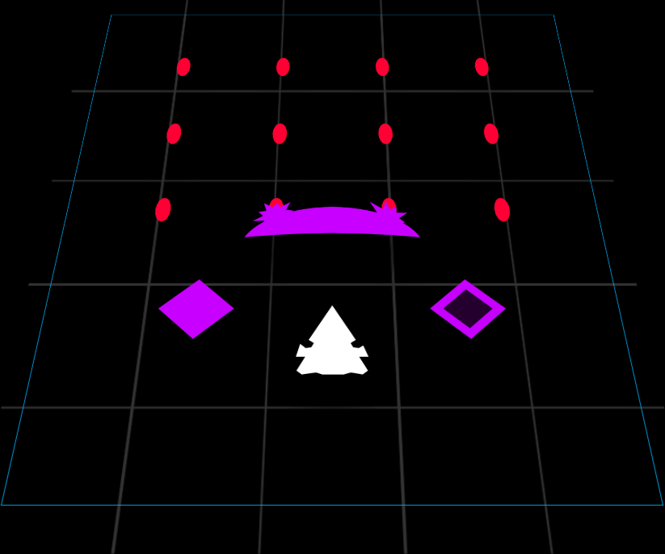
| Upgrade Lvl | Strength | Counters | Angular Coverage |
|---|---|---|---|
| 1 | 100% / 24 Bullets / 8 MIRVs / 1.92s per laser | 2 | −50° to 50° |
| 2 | 108% / 26 Bullets / 9 MIRVs / 2.08s per laser | 3 | |
| 3 | 116% / 28 Bullets / 10 MIRVs / 2.24s per laser | 4 | |
| 4 | 125% / 30 Bullets / 10 MIRVs / 2.4s per laser | 5 | |
| 5 | 137% / 32 Bullets / 11 MIRVs / 2.56s per laser | 6 | |
| Ultimate (6) | 150% / 36 Bullets / 12 MIRVs / 2.88s per laser | −75° to 75° |
| Ultimate | Description | Details |
|---|---|---|
| Phalanx Size = 150% | Increases Phalanx coverage. | Slightly extends Phalanx sideways & downwards to have better side protection. |
Useful Levels: 3, 5, Ultimate
Brief Summary: A slightly underpowered defensive Aura, powerful in the hands of the skilled. Can be equivalent to small bursts of Bullet EMPs. It may also be used as small Barriers, although it is not a very effective function.
Upgrades
- The efficiency of Phalanx increases with more counters .
- Phalanx deploys at a radius of 60 away from your ship core.
- Having 2 counters at Level 1 is insufficient for defensive purposes especially when the wave drags on in later waves.
- The strength of Phalanx makes a small difference in each counter of Phalanx being more effective.
- The strength of Phalanx at level 1, while less efficient, still does reasonably well compared to when it is max.
- The Ultimate is a very useful upgrade which severely enhances the shoveling function to clear more horizontal space.
- However, the increase in width also means more bullets than required will also hit Phalanx, which may hinder its function.
- The Ultimate can also mean a difference in blocking off bullets coming from sideways, particularly boomerangs or pellets from MIRVs .
Strategies
- 24 bullets, or a full 1s exposure to 2 lasers will break a Phalanx of 100% strength.
- Phalanx has 2 color transitions, which occurs when the Phalanx is drained below a certain percentage threshold.
- When a color transition occurs, a sound is played and the color changes instantly
- The first color transition occurs when Phalanx has less than 50% health left.
- The second color transition occurs when Phalanx has less than 16.7% (1/6) health left.
- The primary function of Phalanx is a shovel. Think of it as a Bullet EMP that clears in an elongated tall oval shape.
- It creates a small breathing space for you to have some freedom to move around and reduce the pressure of bullets on you.
- It is difficult to use as a repositioning tool since shoveling means you have to push forward in order to maximize it.
- Fortunately, you can shovel diagonally to re-position yourself, but this requires some skill.
- You can then retreat backwards to complete the repositioning.
- Phalanx is more of a scalpel bullet clearing tool.
- While there is a strength stat to it, it can clear a small area of bullets no matter how many bullets are there in that small area since Phalanx has a Fade Out time of 0.3s which continues to clear bullets even after the strength is depleted.
- This is roughly equivalent to launching 6 mini Bullet EMPs , which is more useful than one full Bullet EMP which may not be always needed.
- Unlike Bullet EMP , Phalanx does not eliminate bullets right in front, so use it pre-emptively
- Be careful before you shovel, because there can be bullets between your ship core and Phalanx.
- Being brave with Phalanx rewards massively.
- Phalanx has huge capability to clear out a large area of bullets if you stretch the shoveling capability of Phalanx.
- When you deploy Phalanx for shoveling, don't be afraid to go all the way to shovel as the Fade Out time of 0.3s is enough time clear a lot more bullets than you think.
- It takes some experimenting to know when you have to stop shoveling and retreat downfield.
- It is a bit of a strange defence. To defend yourself, you have to charge right into the dense field of bullets once deployed to take full advantage of it.
- Phalanx can also be used as a mini barrier .
- This function is to aid an offensive attack, such as charging offensive Zens or aggressively using your main weapon to try and pop a turret off.
- Unfortunately, as the strength of Phalanx is weak, it is not easy to charge Mega Laser or Mega Bomb which takes a long time.
- Like Barrier , if using Phalanx for this function, it needs to be pre-emptive as a last minute Phalanx will not save you since bullets between your ship core and Phalanx are not eliminated.
- This makes Phalanx very annoying as you need a lot of experience with Phalanx to know the allowance time to deploy it so bullets will hit the Phalanx.
- It is unlike Barrier where you have a visual indicator of where the barrier will be.
- For Phalanx, you need experience to know it.
- Once you know it, it shouldn't be too much of an issue.
- It is unlike Barrier
- This function is to aid an offensive attack, such as charging offensive Zens
- How suddenly Phalanx can break can be an issue, even for experienced players.
- Particularly, against lasers , Phalanx can break quickly and unexpectedly.
- Even though lasers are not as effective on Phalanx than on barriers , a large amount of lasers aimed at it, or lasers coupled with bullets also hitting it will quickly break it and the lasers will kill you instantly.
- This means needing to deploy Phalanx after Phalanx to sustain the protection.
- The color of Phalanx tells you when it might potentially break, although the color contrast can be difficult to tell.
- Unlike barrier , multiple Phalanxes cannot stack, resulting in a waste of particles.
- When using Phalanx as a shovel, shovel until it breaks. Or break Phalanx intentionally by clearing stray bullets.
- Try not to leave a weakened Phalanx as that can create a false sense of security.
- Even though lasers are not as effective on Phalanx than on barriers
- Particularly, against lasers , Phalanx can break quickly and unexpectedly.
- Phalanx can also be a very important positioning tool for speedrunning, particularly in early waves.
- You can use Phalanx to move around the sparsely bullet filled area freely so you don't need to worry about crashing into random bullets.
- The ultimate , which increases the width of Phalanx, helps this even more.
- It is better to move diagonally upwards than to move horizontally.
- Shoveling diagonally upwards also puts you in closer range with Invaders, which can be beneficial for speedrunning.
- But it can also be dangerous since going point blank with Invaders means being near to turrets that can shoot underneath Phalanx and kill you.
- In early Acts, you usually have a healthy stockpile of Phalanx, sometimes even having a full 6 counters .
- This is not a huge problem since 6 counters of Phalanx is good to stockpile on heavier waves.
- In fact, try to keep the counters of Phalanx up, with at least 4 at hand.
- This is to reserve for heavy waves where you can easily burn through many counters of Phalanx.
- Don't hesitate to burn them, unless the next wave is also a heavy wave.
Trivia: It takes exactly 24 bullet grazes to gain a complete charge of Phalanx in the tutorial for Phalanx.
Ion Cannon
Ion Cannon fires a projectile that disables Invaders.
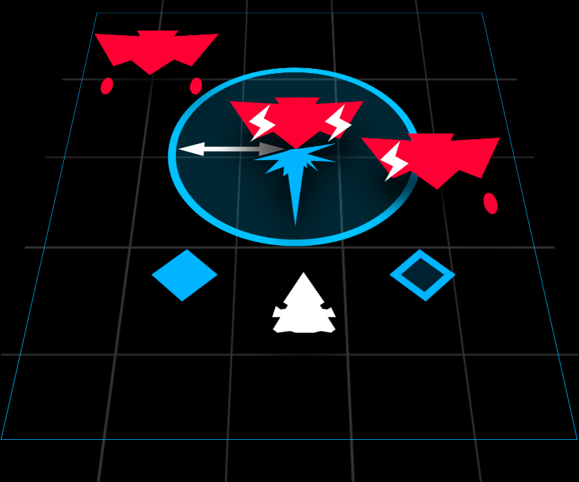
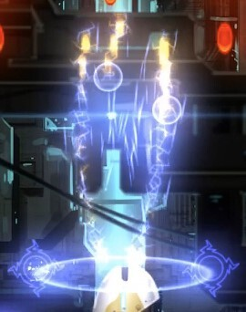
| Upgrade Lvl | Stun Time | Stun Radius | Counters |
|---|---|---|---|
| 1 | 4s | 90 | 2 |
| 2 | 3 | ||
| 3 | 4 | ||
| 4 | 5 | ||
| 5 | 6 | ||
| Ultimate (6) |
| Ultimate | Description | Details |
|---|---|---|
| Deals blast damage on impact. | Ion Cannon projectiles now deal a blast damage of 10 in a blast radius of 50. (A non-Ultimate level Ion Cannon does not deal damage at all.) |
Useful Levels: 3, Ultimate
Brief Summary: Useful against big Invaders such as Eagles and above. Struggles against dense waves. Difficult to use since crowds are quite common, but there are ways to slightly overcome crowds. Not recommended for players with a skill level of intermediate or below.
Upgrades
- Ion Cannon has the following stats:
- Speed = 600
- Hit Circle Radius = 20
- A Level 1 Ion Cannon is almost useless, unless you encounter large Invaders downfield.
- Using Ion Cannon against a closely packed cluster of Ravens and Sparrows can help too.
- It's generally be ok to use 1 Ion Cannon every wave.
- With more charges, reserve 4 or more counters of Ion Cannon.
- As such, Ion Cannon is quite useless at lower levels because a non-Ultimate Level Ion Cannon does not deal damage, making it nothing more than a pre-emptive defensive tool.
- You see those large Invaders that are within reach when a wave arrives? Yeah, just fire off those counters to stun them.
- It sounds straightforward, but ineffective against waves with the larger and more troublesome Invaders at the back.
- It's not so straightforward in practice due to rapid small Invader RNG movement downfield that can make aiming larger Invaders behind difficult.
- If faced with Eagles in front of a Vulture , stun both Eagles and move over them to stun the Vulture. (Or stun one Eagle if you run out of Ion Cannon counters .)
Strategies
- Unlocking the Ultimate is a huge help, which makes Ion Cannon deal blast damage .
- This allows Ion Cannon to have limited crowd clearing capabilities.
- When dealing with a wave with lots of Ravens and Sparrows downfield, reserve at least 4 counters .
- On such Sparrow or Raven heavy waves, throwing down multiple Ion Cannons is not a problem since you can quickly refill all, if not almost all Ion Cannon counters , after expanding all counters.
- Always reserve a few Ion Cannons for the next wave.
- If it's a heavy wave, reserve at least 2 Ion Cannon counters .
- Knowing where to throw Ion Cannons is a strategic decision.
- If the wave is very dense with downfield Ravens and Sparrows , but there are threatening Eagles or larger behind, throw 2-3 Ion Cannons to stun the downfield Invaders.
- Then go behind them and stun the larger Invaders.
- If the turrets on downfield Invaders doesn't track you quickly (if there are no darts), you can skip over them to stun the larger Invaders behind.
- While Invaders upfield are stunned , destroy the downfield Invaders.
- You can also focus on popping off turrets on the larger Invaders upfield if the downfield Invaders aren't threatening.
- Ignore Invaders behind the Vulture unless they are Eagles with threatening turrets.
- If the wave is very dense with downfield Ravens and Sparrows
- Another very advanced technique if you are expecting larger Invaders upfield is to pre-fire Ion Cannon.
- The timing, however, needs to be perfect as being too late will cause it to hit a smaller Invader downfield, while firing too early will waste Ion Cannon.
- This requires practice and knowledge of how fast Invaders are fully arrived on field.
- One Ion Cannon counter should only be fired while Invaders are descending down to fill the screen.
- Everything else depends on its position on field.
- The blast damage of Ion Cannon allows for limited speedrunning capabilities.
- You can start using Ion Cannon at earlier waves usefully to eliminate multiple Sparrows .
- It helps against Ravens , but you only do this between 2 Ravens as the blast radius of Ion Cannon is too small.
- You can also slot in a Sparrow or two between the Raven(s) for the blast damage .
- It helps against Ravens
- Ion Cannon is also a great compliment to slow firing ships as it stops the RNG movement of Invaders, unlike Stun EMP .
- This makes it easier to land slow firing main weapons on Ravens and even Herons .
- This makes it easier to land slow firing main weapons
- You can start using Ion Cannon at earlier waves usefully to eliminate multiple Sparrows
- The main selling point of Ion Cannons is its capabilities to deal against Rocs and Condors .
- However, you need to stockpile at least 3 Ion Cannon counters against a dangerous Condor or Roc .
- 2 well-placed Ion Cannons will always fully stun a Condor or Roc .
- If dangerous Eagles appear as the welcoming party (necessitating 2 Ion Cannon counters to stun them both), reserve the full 6 counters of Ion Cannon against that wave.
- 2 well-placed Ion Cannons will always fully stun a Condor
- Trying to use the stun time to reach and pop off difficult-to-reach turrets is often not enough, so back off momentarily to throw another 2 Ion Cannons on both the left and right sides of a Condor or Roc to keep them stunned.
- Otherwise, the combined strength of other turrets resuming their firing may make going back down after destroying dangerous difficult-to-reach turrets difficult.
- However, you need to stockpile at least 3 Ion Cannon counters against a dangerous Condor
- In the case of a Roc , the sheer amount of turrets can make it difficult to go back down.
- The higher health of a Roc's turret compared to other Invaders mean more than 2 Ion Cannons are required to eliminate all 4 of its difficult-to-reach turrets.
- At best, with only 2 dangerous difficult-to-reach turrets, 2 Ion Cannons are enough if the Roc is Unprotected
 or Armored .
or Armored . - If there are 4 difficult-to-reach dangerous turrets, choose 2 of these turrets to eliminate first, before throwing another Ion Cannon.
- The sheer amount of turrets may mean more often than not, you have to re-stun the entire Roc . This means throwing down another 2 more Ion Cannons, amounting to 4 Ion Cannons in total before being able to destroy all 4 difficult-to-reach turrets.
- If you have a Shielded Roc , then destroying 4 dangerous difficult-to-reach turrets mean stockpiling a full 6 Ion Cannons.
- If there's only 2 dangerous turrets on a Shielded Roc , only 4 Ion Cannon counters are needed.
- A Shielded Roc usually means you have to choose only 2 difficult-to-reach turrets, even if there's 4 of them, since stockpiling the full 6 counters of Ion Cannon is difficult.
- If there's only 2 dangerous turrets on a Shielded
- The higher health of a Roc's
- In the case of a Condor , the close proximity of turrets on a Condor means you probably need to keep the whole Condor stunned .
- Thankfully, there are only 2 difficult-to-reach turrets so a maximum of 4 Ion Cannon counters is enough.
- If there are 2 more dangerous turrets at the front, throw another Ion Cannon in the middle.
- If it's on the side, throw another one at one side and destroy it quickly before heading over to the other side to take out the other one.
- If you have enough Ion Cannons, you may throw 2 more to destroy both dangerous turrets.
- A well-placed Ion Cannon can stun all dangerous turrets on a Condor , but this is extremely difficult.
Trivia: The counter ready sound is one of the best sound effects to the dev.
Goliath Missile

Fires a missile with a large explosion
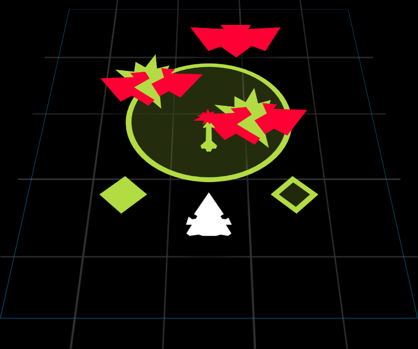
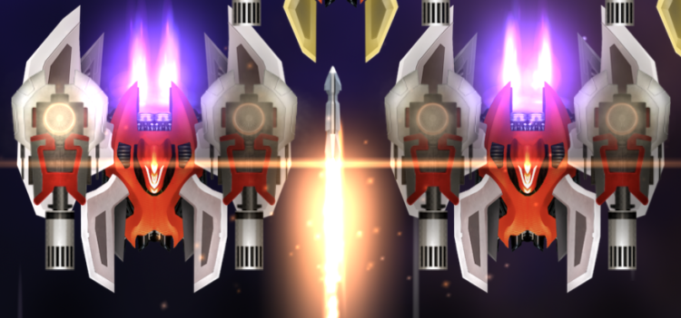
| Upgrade Lvl | Impact Damage | Blast Damage | Blast Radius | Counters |
|---|---|---|---|---|
| 1 | 10 | 20 (High) | 125 | 2 |
| 2 | 21 (High) | 3 | ||
| 3 | 22 (High) | |||
| 4 | 23 (High) | 4 | ||
| 5 | 24 (High) | |||
| Ultimate (6) | 24 (Very High) | 144 |
Useful Levels: Ultimate
Brief Summary: Mini Quantum Nukes. Slow moving straight firing projectile which is difficult to use. Very limited turret popping ability since the impact damage is very small. Generally good for concentrated areas of Ravens and Sparrows.
Upgrades
- A level 1 Goliath Missile is pretty much useless since the blast radius is small which makes it very prone to RNG and very difficult to aim properly to affect a reasonable number of Invaders.
- Coupled with the fact that it takes 2 Goliath Missiles to kill a Raven , having only 2 Goliath Missiles at hand is only useful for eliminating a small cluster of 1-3 Ravens.
- And then you are stuck with eliminating the rest of the crowd yourself.
Strategies
- Goliath Missile have the following stats:
- Initial Speed = 250
- Acceleration = 250
- Width = 10
- Goliath Missile only becomes usable at its Ultimate level where the blast damage is increased and the blast radius is bigger.
- Now you are able to catch more Ravens and deal considerable damage to larger Invaders.
- Now you are able to catch more Ravens
- As Goliath Missiles are very slow moving, they must be pre-empted.
- This means that they must be fired when the last Invader of the previous wave has been destroyed, unless the wave has a frontline Vulture or frontline Condor .
- This is particularly true for light waves as it is very easy for Invaders to simply dodge Goliath Missiles.
- It is also true for dense waves as a pre-fired Goliath Missile can penetrate deep into the Invader lines and explode in the midfield, causing the blast damage to be dealt to both upfield and downfield Invaders.
- This means that they must be fired when the last Invader of the previous wave has been destroyed, unless the wave has a frontline Vulture
- The impact of Goliath Missiles on any Raven kills it instantly.
- Sometimes, it's a good idea to use it on a Raven on one side of the field while you deal with the other side of the field, aka Divide and Conquer.
- Sometimes, it's a good idea to use it on a Raven
- Unfortunately, since Goliath Missiles are very slow moving, they are very prone to missing, or intercepted by Sparrows .
- This can be annoying since the impact damage would be wasted on Sparrows or Ravens while they can be hit on larger Invaders such as Herons or above.
- Try to aim Goliath Missiles at Herons and above since 2 of Goliath Missile blast damages will take out a Raven .
- It's ok to hit Ravens if they are the only Invaders on field, or the Heron(s) are too far away from Ravens.
- It's ok to hit Ravens
- Firing Goliath Missiles early minimizes chances of frontline Sparrows intercepting the Goliath Missiles.
- In Sparrow only waves, firing 1 Goliath Missile is a good idea to eliminate most of them quickly in early waves.
- Know the wave and aim for a Sparrow that is in the midfield so you maximize the chances of landing the hit.
- Know the wave and aim for a Sparrow
- This can be annoying since the impact damage would be wasted on Sparrows
- Goliath Missiles are more effective at close range so try to go up close to Invaders to fire Goliath Missiles to secure powerful AoE damage.
- Especially if you do not need to charge a Zen with a long Charge Time
 .
.
- Especially if you do not need to charge a Zen
Trivia: It takes exactly 30 bullet grazes to gain a complete charge of Goliath Missile in the tutorial for Goliath Missile.
Blade Storm
Swiftly slice at all targets in range
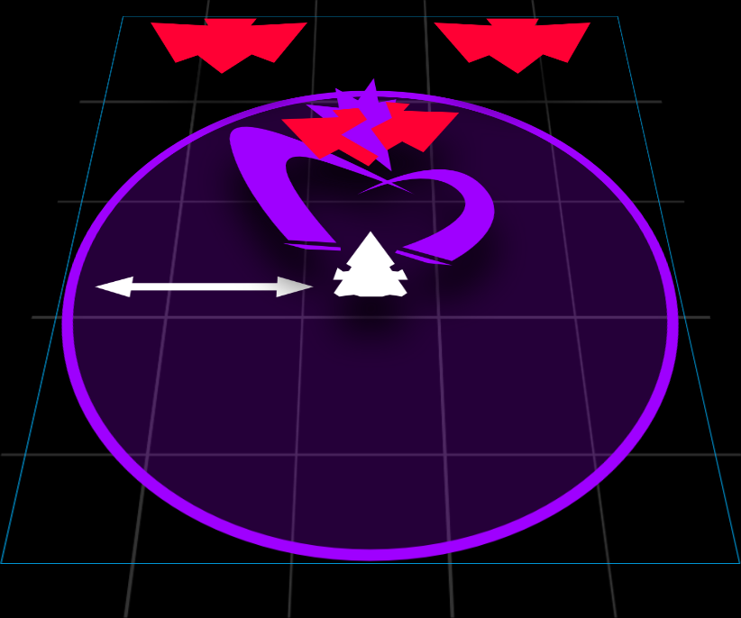
| Upgrade Lvl | Max Damage | Max Radius | Number of Beams | Capacity |
|---|---|---|---|---|
| 1 | 80 | 350 | 10 | 100ms |
| 2 | 84 | 375 | ||
| 3 | 88 | 400 | ||
| 4 | 92 | 425 | ||
| 5 | 96 | 450 | ||
| Ultimate (6) | 100 | 500 | 20 | 50ms |
| Ultimate | Description | Details |
|---|---|---|
| Omnislash | Deals damage with double the amount of attacks. | Increases the number of beams from 10 to 20, which reduces overkill. |
Specific recommended usage of Blade Storm will be mentioned under Shogun itself, since Blade Storm is unique to Shogun.
Useful Levels: None in particular
Brief Summary: A hybrid between Missile Swarm and Laser Storm, it can be described as a fast damage disposing version of Laser Storm at times, since the targeting of Blade Storm can be quite random, just like Laser Storm.